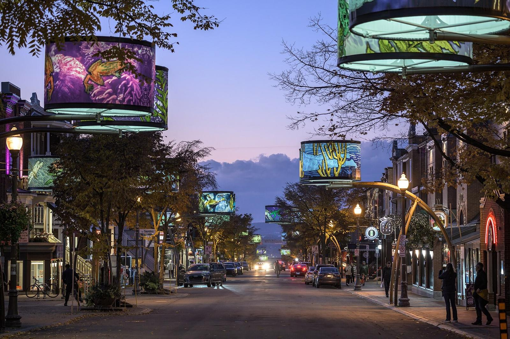

La Gazette de {{SITE}} est née d'une idée simple : raconter ce qui se passe à deux rues de chez soi. Elle est écrite par des bénévoles, relue par d'autres, et lue, nous l'espérons, par tout le quartier.
Vous avez une nouvelle, une photo, une idée de reportage ? Écrivez-nous : la rédaction se réunit chaque lundi soir au café du coin.
Chaque vendredi, la Gazette dans votre boîte aux lettres électronique.